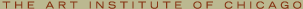

|  | ||||
 |
|
INTRODUCTION Henri de Toulouse-Lautrec (1864–1901), the quintessential chronicler of the Parisian district of Montmartre, created some of the most memorable images of the exciting new culture of late-19th-century France—a culture that was worlds apart from the artist’s aristocratic upbringing in provincial France. Born in the southern town of Albi, Lautrec was related to the counts of Toulouse, who had once ruled over the Languedoc region. Though he was economically privileged, Lautrec suffered numerous health ailments—likely resulting from the intermarriage of his parents, who were cousins. Lautrec’s abnormally weak bones led to multiple leg fractures that stunted his growth and made walking a lifelong difficulty for him. Barred from many activities, he became a keen observer, and with his mother’s encouragement he began drawing and painting in his teenage years. Toulouse-Lautrec and Montmartre journeys through the evolution of Lautrec’s short career—from experimental painter to innovative printmaker to contemplative illustrator—demonstrating how his artwork captures the essence of fin-de-siècle Parisian nightlife. His prints, paintings, and drawings in a variety of media are juxtaposed with the work of his predecessors and contemporaries, highlighting not only the Bohemian culture that saturated the district of Montmartre, but also the manner in which older artists such as Edgar Degas influenced Lautrec’s choice of subject matter, framing, lighting, and perspective, and the way that the daring, often racy entertainment industry of Montmartre lured such artists as Vincent van Gogh and Pablo Picasso to the district. The installation presents certain themes of Lautrec’s work that display both the settings that fascinated him and his uncanny ability to provide psychological insight into the dancers, patrons, and Montmartre celebrities that he portrayed. In his representations of the cabarets, dance halls, café-concerts, celebrity culture, brothels, and circuses he revealed both the public and private sides of Montmartre culture. back to top INTRODUCING MONTMARTRE Montmartre’s dance halls, cabarets, café-concerts, brothels, and circuses created a racy, uncensored atmosphere that attracted working-class residents of the district, as well as thrill-seeking bourgeois patrons from central Paris and beyond. Set upon a butte, or hill, and removed from the city center, Montmartre had an identity separate from that of central Paris, which was then governed by the conservative Third Republic. The neighborhood attracted artists of all types. Some came seeking fame and fortune, while others just wished to revel in the Bohemian atmosphere. For these artists, the vibrant culture of Montmartre, with its unbridled energy, tawdry behavior, garish colors, and provocative celebrities, was both a way to live and a subject to depict. Lautrec, who labeled Montmartre as “outside the law,” immersed himself in this decadent culture, painting and drawing by day and dwelling in the cafés and cabarets by night. back to top DANCE HALLS In the late 1880s and early 1890s, Montmartre’s dance halls surged in popularity. Some of the most famous venues, including the Moulin de la Galette and the Moulin Rouge, offered a wide variety of entertainment in a carnival-like atmosphere that included acrobats, puppet shows, and animal acts. It was the singers and dancers, however, who were the greatest attractions. Large crowds came to see celebrities such as La Goulue (“the glutton”) perform new dances such as the chahut—a racy, eroticized version of the cancan. Prints such as The Englishman at the Moulin Rouge showcase Lautrec’s libertine stance on Montmartre’s decadent nightlife. The paintings that Lautrec made of the dance halls of Montmartre are among his most complex works. They constitute the majority of his large, multifigure canvases—works that challenged his compositional skill. At the Moulin Rouge is an unsettling painting with severe lighting, unconventional perspective, and an ambiguous narrative. The performers La Goulue and Jane Avril, as well as Lautrec himself, can be found in this painting. With its skewed perspective, lurid colors, and perplexing social dynamic, At the Moulin Rouge is both alienating and arresting—an embodiment of the spirit of Montmartre. back to top THE CHAT NOIR AND THE CABARETS In 1881 the artist-cum-entrepreneur Rodolphe Salis opened a new cabaret called the Chat Noir (“black cat”) at the foot of Montmartre’s hill. The name called to mind Edgar Allen Poe’s perverse and haunting tale by the same title, French folktales, and the poetry of Charles Baudelaire. The black cat—a nocturnal creature that is mysterious, seductive, playful, and independent—became a symbol not only for the Chat Noir itself, but for all of Montmartre. The Chat Noir became a gathering spot for avant-garde artists, poets, musicians, and writers, who used the cabaret as an artistic laboratory to recite poems, sing songs, and exhibit paintings. Publicity posters, made possible by the lithographic technique, were an important innovation of the artists of Montmartre. Lithography, a printing process in which images are drawn on a large stone, allowed Lautrec to utilize a skillful integration of text and image. Théophile-Alexandre Steinlen’s poster Tournée du Chat Noir, featuring a black cat sitting upright with a halo surrounding his head, is an iconographic image of Montmartre. Lautrec’s first foray into printmaking was a resounding success. His print Moulin Rouge: La Goulue fueled the popularity of La Goulue and made Lautrec an overnight sensation in Montmartre. back to top THE CAFÉ-CONCERTS AND CELEBRITY CULTURE Of all the pleasures of Paris, it was the café-concert and its stars that cast the greatest spell on Lautrec. Less formal and less expensive than traditional theater, these establishments provided entertainment as patrons milled about socializing, smoking, and drinking. Famous Friends Throughout his life, Lautrec developed what he called furias, or intense obsessions with certain performers who would enthrall him for a single season or several years. Lautrec would return, night after night, recording the gestures, facial expressions, and postures that made each performer unique. Lautrec developed a short yet intense furia for the dancer Loïe Fuller, whose swirling muslin dress, highlighted by the recently invented colored electric lights that reflected off a glass floor, made her sinuous form resemble an ethereal flower or flame. Lautrec admired Fuller from afar and made a series of experimental lithographs to portray her captivating performance. These prints convey the ephemeral mood of the shifting light, color, and music in a series of almost cinematic images. Lautrec also created publicity posters for several other well-known Montmartre celebrities, including Jane Avril, May Belfort, Aristide Bruant, Yvette Guibert, and May Milton. The monumental painting Marcelle Lender Dancing the Bolero in “Chilpéric” showcases the vivid movement of Lender’s dance as well as Lautrec’s virtuosity with color. Although Loïe Fuller and Marcelle Lender were not particularly close to Lautrec, other performers were very good friends with the artist. Aristide Bruant performed at the Chat Noir and later at his own cabaret, Le Mirliton. In the poster Ambassadeurs: Aristide Bruant, Lautrec distilled Bruant’s personality into a few recognizable features including his signature hat, red scarf, and black overcoat, as well as his imposing posture and defiant gaze. In his portraits and prints of Jane Avril, Lautrec depicted the dancer not only in her guise as a popular performer, but also as an introspective, private woman. Lautrec’s celebrity prints display not only his shrewd insight into the psychological perspective of his subjects, but also the public and private personae of celebrities. back to top THE MAISONS CLOSES The maisons closes ("closed houses")—the French euphemism for brothels—were licensed establishments where authorities could discretely regulate prostitution. Police periodically monitored the premises while prostitutes, who officially registered with one of the maisons closes, were subject to routine medical inspections. Lautrec, a social outsider, seemed to find comfort in the sexual subculture, even boasting to friends that he had lived for a time in a brothel (an unproven claim). Between the mid-1880s and mid-1890s, Lautrec produced some 50 paintings on the theme of prostitution, none of which was publicly exhibited during his lifetime. Only Elles, his 1896 album of 11 color lithographs that depicts the daily routines of prostitutes, was published. Lautrec’s representations of the world of prostitution evince a real sympathy for the women; however, the works are also dominated by a matter-of-fact mentality. The women are seen as both sensual and alluring and as surviving under trying social circumstances. The prostitutes are shown awaiting clients, submitting to medical exams, lying on beds, and embracing. In the Salon: The Sofa illustrates a group of prostitutes in a maison close seated upon a red divan, awaiting their clients. With resigned faces and tired eyes, modestly cut frocks, and reserved body language, these women engage with neither the viewer nor one another, embodying a world of alienation. Alternately compassionate and voyeuristic, Lautrec’s brothel scenes are some of his most complex works. back to top THE CIRCUS AND LATE WORK One of the great spectacles of the 19th century, the circus combined extraordinary gymnastic and acrobatic feats, animals trained to obey and amuse, crazy clowns, daring slapstick comedy, and controlled chaos. As an important part of the entertainment industry, the circus relied on tradition and expectation as well as innovation and novelty, as did the dance halls and cabarets. Lautrec’s interest in the circus was a logical extension of his childhood paintings and drawings of equestrian scenes. One of his earliest mature works, Equestrienne (At the Circus Fernando), features the trained horses that were a major circus attraction of the period. This composition is dominated by the interplay between the authoritative figure of the ringmaster Fernando, who is smartly clad in tails and clasping a whip, and a bareback rider atop a large stallion. The painting, admired for its youthful confidence and brazen sexual overtones, was purchased by the Moulin Rouge’s owner to hang in the famous dance hall. In 1899 Lautrec was institutionalized, owing to the advanced stages of alcoholism, which had plagued him much of his life. Determined to win his release, Lautrec made a series of crayon circus drawings from memory to prove the soundness of his mind. The fantastic and nightmarish quality of these drawings shows how the circus served as an ideal metaphor for the disordered Lautrec to articulate pictorially his inner struggles and traumas. Indeed, these poignant images secured his release from the clinic. Upon returning to Montmartre, Lautrec resumed a life of artistic activity combined with heavy drinking and late nights. In the years that followed, Lautrec’s health deteriorated as his alcoholism progressed; he died in the arms of his mother on September 9, 1901. Although Lautrec lived only to the age of 36, he left behind a brilliant visual record of the spirit of Montmartre. back to top |
| Last updated: July 2003. Best viewed with Netscape Navigator 4.0 or higher. Reproduction Permission. Copyright © 2003. All rights reserved. |